<!DOCTYPE html PUBLIC "-//W3C//DTD XHTML 1.0 Transitional//EN" "http://www.w3.org/TR/xhtml1/DTD/xhtml1-transitional.dtd">
<html xmlns="http://www.w3.org/1999/xhtml">
<head>
  <meta http-equiv="Content-Type" content="text/html; charset=utf-8" />
  <meta http-equiv="Content-Style-Type" content="text/css" />
  <meta name="generator" content="pandoc" />
  <title></title>
  <link rel="stylesheet" type="text/css" href="otro.css">
  <style type="text/css">code{white-space: pre;}</style>
  <link rel="stylesheet" href="otro.css" type="text/css" />
  <script src='https://cdnjs.cloudflare.com/ajax/libs/mathjax/2.7.2/MathJax.js?config=TeX-MML-AM_CHTML'></script>
</head>
<body>

  <div id="header">
    <h1 class="title">Fluidos</h1>
  </div>

  <section>

    <header>
        <h1 id="la-densidad">La densidad</h1>
    </header>

<p>La densidad de una sustancia <span class="math inline">\(d\)</span> se define como la masa <span class="math inline">\(m\)</span> por unidad de volumen <span class="math inline">\(V\)</span>. Por tanto, el modo de calcularla es: <span class="math display">\[d=m/V\]</span></p>
<p>Como corresponde a su definición, la densidad se expresará en unidades de masa divididas por unidades de volumen. En el sistema MKS, kg/m<span class="math inline">\(^3\)</span>, en el CGS, g/cm<span class="math inline">\(^3\)</span>. Como ejemplo, el agua posee una densidad de 1000 kg/m<span class="math inline">\(^3\)</span> o 1 g/cm<span class="math inline">\(^3\)</span> a 20<span class="math inline">\(^\circ\)</span>C.</p>

<article style="background-color:lightblue;border-color:blue">
  <strong>EJEMPLO: La densidad del acero es 7,83 g/cm3. ¿Cuál es en kg/m3?</strong>
  <button id="e1" class="button"  onclick="show2('e1');">Solución</button>
  <div id="sol-e1" style="display:none;">
    <br>
    Solución:
    <br><br>
    <span class="math display">\[7,83\frac{g}{cm^3}=7,83\frac{g}{cm^3}\frac{0,001Kg/g}{10^{-6}m^3/cm^3}=7,83 * 1000kg/m^3\]</span>
    <span class="math display">\[7,83\frac{g}{cm^3}=7830\frac{kg}{m^3}\]</span>
  </div>
</article>


<p>Esta magnitud es de gran importancia, puesto que caracteriza la masa de una sustancia independientemente de su densidad. Es decir, pongamos de nuevo el ejemplo del agua. Si pesamos en una balanza un litro, es decir 1000 cm<span class="math inline">\(^3\)</span>, observaremos que la balanza marca 1 kg. Si ahora aumentamos el volumen al doble, 2 litros, observaremos que la balanza también marca el doble de masa, 2 kg. La densidad, que es la masa por unidad de volumen, en el primer caso es <span class="math inline">\(d=1000\mbox{ g}/1000\mbox{ cm}^3=1\)</span> g/cm<span class="math inline">\(^3\)</span>. En el segundo caso, tanto la masa como el volumen son el doble, y por tanto el cociente entre ambas, que es la densidad, no variará: <span class="math inline">\(d=2\times1000\mbox{ g}/2\times1000\mbox{ cm}^3=1\)</span> g/cm<span class="math inline">\(^3\)</span>.</p>
<p>En general, tomemos la cantidad que tomemos de una sustancia, su densidad es siempre la misma, sólo depende de la sustancia escogida. Se trata pues, de una característica intrínseca de la materia.</p>
<p>Dos sustancias diferentes tendrán en general una densidad diferente. Si mezclamos dos sustancias inmiscibles, observaremos que la de menor densidad ocupa la parte superior del recipiente. Por ejemplo, el aceite posee una densidad inferior al agua, por lo que al mezclarlos el aceite siempre se va a la parte superior.</p>
<p>La densidad es una propiedad de la materia, y su valor depende del tipo pero también del estado de agregación en el que se encuentre. Por ejemplo, el agua posee una densidad mayor que el hielo, hecho por el cual el hielo flota en el agua. Esto es una excepción importante, ya que en general los sólidos poseen una densidad mayor que los líquidos y que los gases.</p>

<article style="background-color:lightblue;border-color:blue">
  <strong>EJEMPLO: Si pesamos un lingote de oro como el de la siguiente gura, encontraremos que su masa es 12.4 kg.</strong>

  <div class="sbsimage">
      <div class="imgContainerEnd">
        <a data-fancybox="" href="figuras/teoria-lingote.png">
        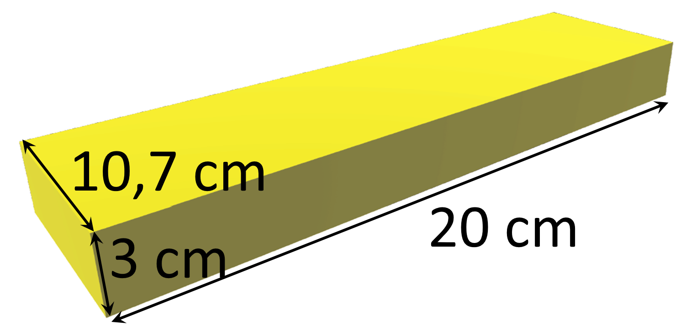
      </a>
      </div>
  </div>

  <button id="e2" class="button"  onclick="show2('e2');">Solución</button>
  <div id="sol-e2" style="display:none;">
    <br>
    Solución:
    <br><br>
    Dadas las dimensiones del lingote, su volumen es 642 cm<sup>3</sup>. La densidad es por tanto de 19.31 g/cm<sup>3</sup>, casi 20 veces más que el agua líquida.
  </div>
</article>

</section>

<br><br><br>

<a href="fluidos-1.html">Ejercicios de densidad</a>

<br><br>

<section>

  <header>
      <h1 id="sólidos-líquidos-y-gases">Sólidos, líquidos y gases</h1>
  </header>

<p>La mayoría de las sustancias que existen en el entorno que nos rodea se pueden clasificar en tres posibles estados: sólidos, líquidos y gases.</p>
<p>Un sólido posee una forma y un tamaño prácticamente constantes. Aunque se aplique un esfuerzo sobre un sólido, éste no cambia con facilidad de forma, ni se puede expandir o comprimir. Son necesarios grandes esfuerzos para poder modificar el volumen de un sólido. La explicación de este comportamiento se debe a su estructura microscópica. Los átomos que forman la estructura microscópica de un sólido sólo pueden vibrar en torno a una cierta posición de equilibrio y se encuentran fuertemente estructurados y ordenados formando redes cristalinas de distinta geometría.</p>
<p>Un líquido, por el contrario, puede modificar su forma; de hecho, los líquidos adquieren la forma del recipiente que los contiene. Sin embargo, el volumen de un líquido es prácticamente invariante frente a cambios moderados de presión. Desde un punto de vista microscópico, los átomos o moléculas de un líquido forman enlaces transitorios de corto alcance que se rompen y forman continuamente debido a la agitación térmica.</p>
<p>En otras palabras, los enlaces atractivos proporcionan al líquido la cohesión suficiente para mantener unidas a las moléculas, pero no es capaz de imponer orden a distancias grandes.</p>
<p>Por último, en un gas, la distancia típica entre moléculas es muy grande en comparación con su tamaño. A diferencia de los líquidos y sólidos, las moléculas de un gas prácticamente no interactúan entre sí, excepto cuando colisionan. En un gas la energía térmica es mucho mayor que la energía de los enlaces atractivos entre moléculas</p>
<p>La debilidad de los enlaces atractivos es la responsable de que en un gas no se conserve ni el volumen ni la forma. Cuando se confina un gas en un recipiente, éste siempre se expande hasta llenar el recipiente que lo contiene.</p>
<p><strong>¿Qué entendemos por un fluido? Un fluido es cualquier sustancia capaz de fluir y que, por tanto, carece de forma fija, ya que adopta la del recipiente que lo contiene en cada momento. Los gases y los líquidos son fluidos; los sólidos no.</strong></p>
<p>¿Cuál es la diferencia más significativa entre los fluidos líquidos y los fluidos gases? Tal y como se ha comentado, las fuerzas intermoleculares de los líquidos son relativamente fuertes, de tal modo que son capaces de mantener el volumen del sistema, mientras que en un gas estas fuerzas son más débiles y, por tanto, no están definidos ni su forma ni su volumen. En otras palabras, los líquidos son fluidos incompresibles y los gases son fluidos compresibles. A partir de ahora nos centraremos únicamente en el estudio de los fluidos líquidos. Concretamente, en este primer tema abordaremos el caso particular de líquidos en reposo.</p>

<br><br>

<center><p>Densidad de sólidos y líquidos (20<span class="math inline">\(^\circ\)</span>C) en g/cm<span class="math inline">\(^3\)</span></p></center>

<center><table>
<thead>
<tr class="header">
<th align="center">Material</th>
<th align="center">Densidad</th>
<th></th>
<th align="center">Material</th>
<th align="center">Densidad</th>
<th></th>
<th align="center">Material</th>
<th align="center">Densidad</th>
</tr>
</thead>
<tbody>
<tr class="odd">
<td align="center">Acero</td>
<td align="center">7.7-7.9</td>
<td></td>
<td align="center">Oro</td>
<td align="center">19.31</td>
<td></td>
<td align="center">Aluminio</td>
<td align="center">2.7</td>
</tr>
<tr class="even">
<td align="center">Plata</td>
<td align="center">10.5</td>
<td></td>
<td align="center">Cinc</td>
<td align="center">7.15</td>
<td></td>
<td align="center">Platino</td>
<td align="center">31.46</td>
</tr>
<tr class="odd">
<td align="center">Cobre</td>
<td align="center">8.93</td>
<td></td>
<td align="center">Plomo</td>
<td align="center">11.35</td>
<td></td>
<td align="center">Cromo</td>
<td align="center">7.15</td>
</tr>
<tr class="even">
<td align="center">Silicio</td>
<td align="center">2.3</td>
<td></td>
<td align="center">Estaño</td>
<td align="center">7.29</td>
<td></td>
<td align="center">Sodio</td>
<td align="center">0.975</td>
</tr>
<tr class="odd">
<td align="center">Hierro</td>
<td align="center">7.88</td>
<td></td>
<td align="center">Titanio</td>
<td align="center">4.5</td>
<td></td>
<td align="center">Magnesio</td>
<td align="center">1.76</td>
</tr>
<tr class="even">
<td align="center">Vanadio</td>
<td align="center">6.02</td>
<td></td>
<td align="center">Níquel</td>
<td align="center">8.9</td>
<td></td>
<td align="center">Volframio</td>
<td align="center">19.34</td>
</tr>
<tr class="odd">
<td align="center">Madera</td>
<td align="center">0.3-0.9</td>
<td></td>
<td align="center">Vidrio</td>
<td align="center">2.4-2.8</td>
<td></td>
<td align="center">Hormigón</td>
<td align="center">2.3</td>
</tr>
<tr class="even">
<td align="center">Aceite</td>
<td align="center">0.8-0.9</td>
<td></td>
<td align="center">Bromo</td>
<td align="center">3.12</td>
<td></td>
<td align="center">Ácido sulfúrico</td>
<td align="center">1.83</td>
</tr>
<tr class="odd">
<td align="center">Gasolina</td>
<td align="center">0.68-0.72</td>
<td></td>
<td align="center">Agua</td>
<td align="center">1.0</td>
<td></td>
<td align="center">Glicerina</td>
<td align="center">1.26</td>
</tr>
<tr class="even">
<td align="center">Agua (mar)</td>
<td align="center">1.01-1.03</td>
<td></td>
<td align="center">Mercurio</td>
<td align="center">13.55</td>
<td></td>
<td align="center">Alcohol etílico</td>
<td align="center">0.79</td>
</tr>
</tbody>
</table></center>

</section>

<section>

  <header>
      <h1 id="la-presión">La presión</h1>
  </header>

<p>Si ejercemos una fuerza sobre un objeto o sustancia, entonces esta fuerza se dice que es una <em>fuerza de contacto</em>. Las fuerzas de contacto son más efectivas cuanto menor es la superficie sobre la que actúan. Existen cientos de ejemplos cotidianos. Con una misma fuerza es más probable que hagamos un corte con un cuchillo si éste está bien afilado (tiene menos superficie sobre la que se ejerce la fuerza), es más cómodo dormir sobre un colchón que sobre el suelo, el uso de raquetas de nieve para andar sin hundirse...</p>
<p>En general, es más interesante conocer la fuerza que se ejerce por unidad de superficie. En ello se basa el concepto de presión:</p>
<p><strong>Presión</strong>: La presión se define como el cociente entre la <strong>componente normal</strong> de una fuerza ejercida sobre una superficie y el área de dicha superficie.</p>
<p><span> <span class="math display">\[\fbox{$\displaystyle p=\frac{F_n}{S}$}\]</span></span></p>

<div class="sbsimage">
    <div class="imgContainerEnd">
      <a data-fancybox="" href="figuras/teoria-f_normal.png">
      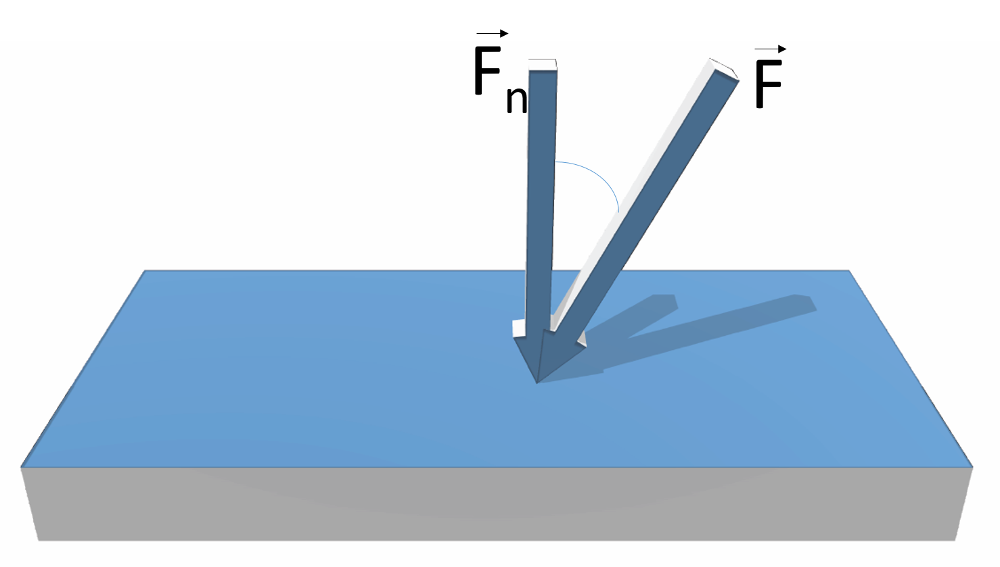
    </a>
    </div>
</div>


<p>Las unidades de la presión son el Pascal, Pa = N/m<span class="math inline">\(^2\)</span> en el M.K.S., o la dina/cm<span class="math inline">\(^2\)</span> en el C.G.S. La conversión entre estas dos unidades es 1 Pa = 10 dinas/cm<span class="math inline">\(^2\)</span>. Como ejemplo, la presión atmosférica (valor estándar) es igual a p<span class="math inline">\(_0\)</span> = 101300 Pa.</p>

<article style="background-color:lightblue;border-color:blue">
  <strong>EJEMPLO: Un libro de 500 g se apoya sobre una mesa horizontal. Si el área de contacto es 3 dm<sup>2</sup>, ¿qué presión ejerce sobre la mesa? Expresen el resultado en Pa y en dinas/cm<sup>2</sup>.</strong>
  <button id="e3" class="button"  onclick="show2('e3');">Solución</button>
  <div id="sol-e3" style="display:none;">
    <br>
    Solución:
    <br><br>

    Para calcular la presión utilizamos su denición. La fuerza que actúa sobre la mesa es el peso del libro y como aquella está horizontal, entonces <span class="math inline">\(P = F = Fn\)</span>. Por lo tanto

    <span class="math display">\[P=\frac{mg}{S}\]</span>

    Si pasamos el área del libro al M.K.S., <span class="math inline">\(3 dm^2 = 3 * 10^{-2} m^2\)</span>, por lo que:

    <span class="math display">\[P=\frac{0,5kg*9,8m/s^2}{3*10^{-2}m^2}\]</span>
    <span class="math display">\[P=163,3 Pa\]</span>

    Para pasarlo a dinas/cm2, como <span class="math inline">\(1 Pa = 10 dinas/cm^2\)</span>, entonces

    <span class="math display">\[P=1633 dinas/cm^2\]</span>

  </div>
</article>

<p>¿Cómo es la presión de un fluido estático (en reposo)? Un líquido ejerce una fuerza sobre cualquier objeto inmerso en él igual a la presión del fluido por el área del objeto <span class="math inline">\(F=PS\)</span>.</p>

<article style="background-color:lightblue;border-color:blue">
  <strong>EJEMPLO: Calcular la fuerza ejercida sobre el tapón de
desagüe de 20 cm de diámetro de una piscina llena de agua,
si la presión del agua a la altura de la trampilla es de 131.3
kPa.</strong>
  <button id="e4" class="button"  onclick="show2('e4');">Solución</button>
  <div id="sol-e4" style="display:none;">
    <br>
    PLANTEAMIENTO: Realicemos primero un esquema

    <div class="sbsimage">
        <div class="imgContainerEnd">
          <a data-fancybox="" href="figuras/teoria-ejercicio-tapon.jpg">
          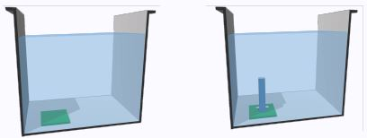
        </a>
        </div>
    </div>

    En este esquema situaremos la piscina y la trampilla en el fondo.

    Identiquemos ahora lo que se nos pide: una fuerza. Buscamos qué elementos producen esa posible fuerza. Como hay
un fluido en contacto, actuará sobre la trampilla una fuerza
de presión. Por lo tanto, la dibujamos en el esquema: Fíjese
bien que hemos dibujado esta fuerza PERPENDICULAR a
la trampilla, puesto que así es como actúa la presión.
Lo siguiente que nos planteamos es cómo podemos calcular
esa fuerza. Acudimos a la denición de presión y por tanto,

<span class="math display">\[F=PS\]</span>

siendo P la presión del fluido que está en contacto con la trampilla.<br>

<span class="math display">\[P=131,3kPa = 131300Pa\]</span>
<span class="math display">\[S = \pi R^2=\pi\frac{D}{2}^2=3,14*10^{-2}m^2\]</span>

Por lo tanto,

<span class="math display">\[F=131300Pa * 10^{-2}m^2 = 4150N\]</span>

  </div>
</article>

<ol type="i">
<li><p><strong>La fuerza que ejerce un fluido en reposo sobre una superficie por efecto de la presión siempre es normal a la superficie.</strong> En la siguiente figura, el fluido ejerce fuerzas de presión tanto sobre la plancha sumergida como sobre las paredes del recipiente, y siempre perpendicular a ella.</p>

  <center><table>
  <thead>
  <tr class="header">
  <th align="center"><div class="sbsimage">
      <div class="imgContainerEnd">
        <a data-fancybox="" href="figuras/teoria-plancha_recipiente.png">
        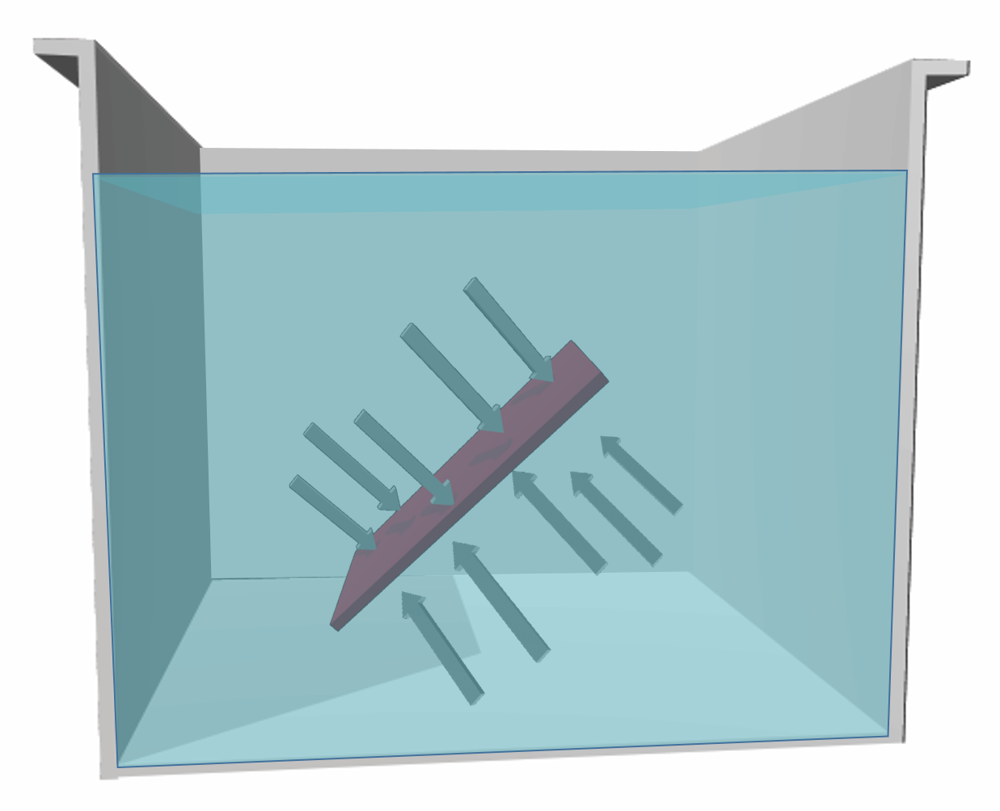
      </a>
      <div class="sbsCaption"><strong>a) </strong> Presión sobre objeto sumergido</div>
      </div>
  </div></th>
  <th align="center"><div class="sbsimage">
      <div class="imgContainerEnd">
        <a data-fancybox="" href="figuras/teoria-presion_paredes.png">
        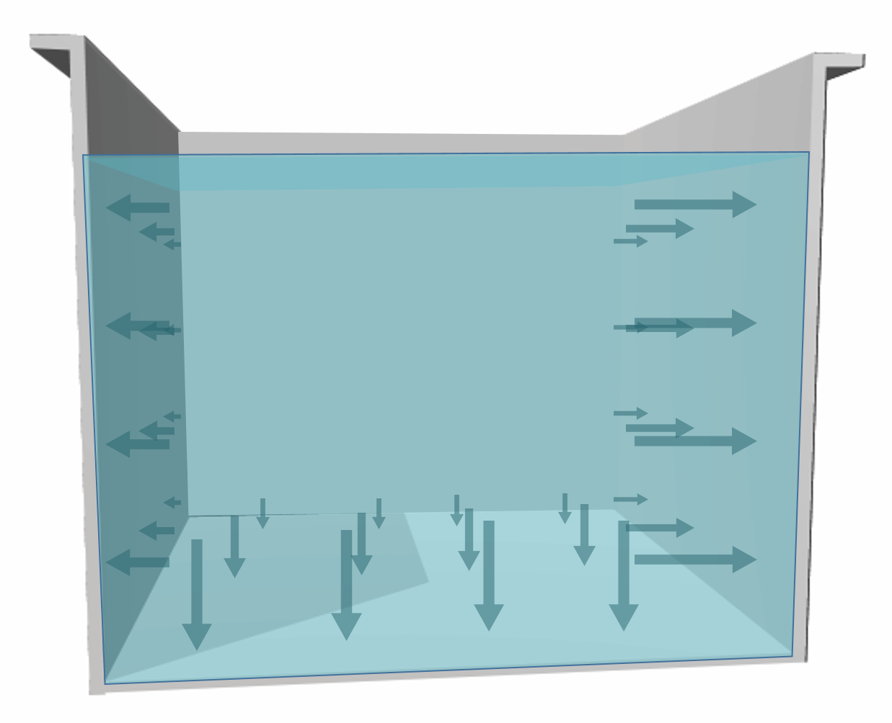
      </a>
      <div class="sbsCaption"><strong>b) </strong> Presión sobre las paredes</div>
      </div>
  </div></th>
  </thead>
  </table>
</center>
<br>

<p>Para poder comprobar que esto es cierto, podemos considerar la fuerza de presión que ejerce el fluido sobre una de las paredes del recipiente. Si hubiese alguna componente tangencial, el fluido se movería en el entorno cercano a la pared, lo cual entra en contradicción con el hecho de que el fluido está en reposo. Por tanto, la fuerza tangencial siempre es nula.</p>

<article style="background-color:lightblue;border-color:blue">
  <strong>EJEMPLO: ¿Habría cambiado algo en el ejemplo anterior si
el desague se encontrase en el fondo de la pared lateral en
vez de en el suelo?</strong>

<div class="sbsimage">
    <div class="imgContainerEnd">
      <a data-fancybox="" href="figuras/teoria-tapon_3.png">
      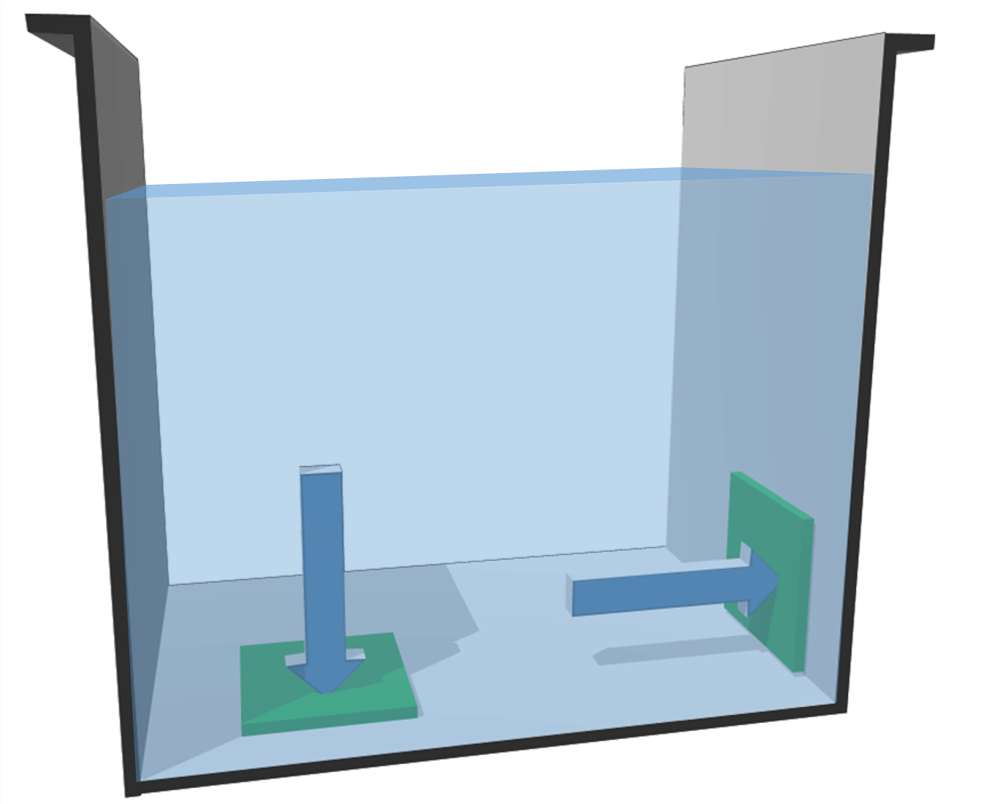
    </a>
    </div>
</div>

  <button id="e5" class="button"  onclick="show2('e5');">Solución</button>
  <div id="sol-e5" style="display:none;">
    <br>
    Solución:
    <br><br>

    Para responder esto, tengamos en cuenta que la presión no
depende de la dirección de la supercie. En cambio, la fuerza
es siempre PERPENDICULAR A LA SUPERFICIE. Por
tanto, sólo depende de su tamaño y de la presión del fluido,
no de su altura.

  </div>
</article>


</li>
<li><p> A una misma profundidad, la presión es la misma en todas las direcciones. Dicho en otras palabras, <strong>la presión no depende de la orientación del cuerpo dentro del fluido, sólo de su profundidad.</strong></p>
<p style="color:red">IMPORTANTE:<br /></p>
<ul>
<li><p>La <strong>presión</strong> es una magnitud <strong>escalar</strong>. Es decir, podemos asignar a cada punto del fluido un valor numérico de la presión.<br /></p></li>
<li><p>La <strong>fuerza</strong> que ejerce la presión, sin embargo, es un <strong>vector</strong>. La dirección de dicha fuerza dependerá de la orientación de la superficie sobre la que actúe, y siempre perpendicular a ella.</p></li>
</ul>

</li>


</section>

<br><br><br>

<a href="fluidos-2.html">Ejercicios de fuerza y presión</a>

<br><br>

<section>

  <header>
      <h1 id="presión-hidrostática">Presión hidrostática</h1>
  </header>


<p>Los fluidos ejercen una fuerza de presión sobre las paredes que lo contienen. Esta presión es tanto mayor cuanto mayor es la profundidad.</p>
<p>Entre dos puntos que están a distinta altura (A y B en la figura siguiente, (1)), existe una diferencia de presión proporcional a la diferencia de altura:</p>
<p><span class="math display">\[P_A=P_B+d*g*h\]</span></p>
<p>En esta ecuación, <span class="math inline">\(d\)</span> es la densidad del fluido, <span class="math inline">\(g=9.8\)</span> m/s<span class="math inline">\(^2\)</span> es la aceleración de la gravedad y <span class="math inline">\(h\)</span> la diferencia de altura entre ambos puntos. Por lo tanto, si dos puntos están conectados por el mismo fluido, y están a igual altura, la presión es la misma.</p>

<div class="sbsimage">
    <div class="imgContainerEnd">
      <a data-fancybox="" href="figuras/teoria-tanques_1-2.png">
      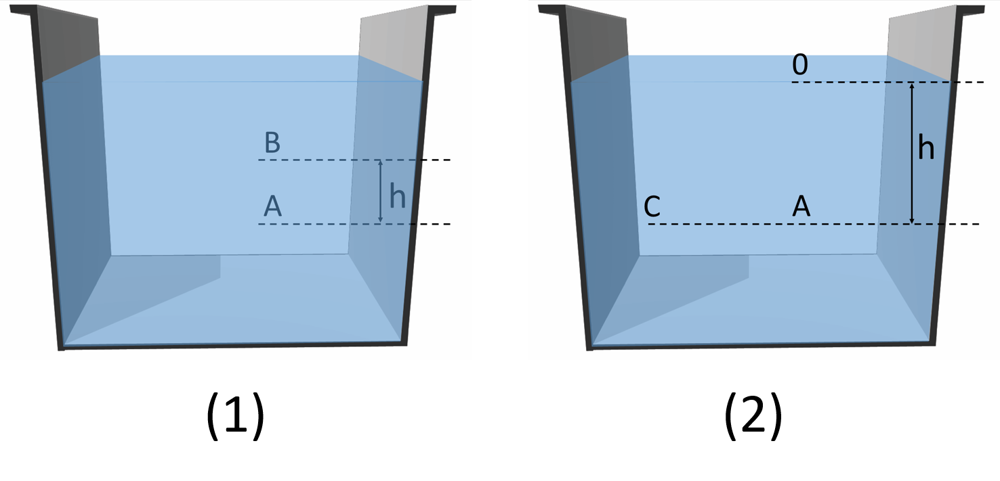
    </a>
    </div>
</div>

<p>Particularmente, si tomamos como referencia la superficie libre del líquido, como en el caso de la figura anterior (2): <span class="math display">\[P=P_0+d*g*h\]</span> donde ahora <span class="math inline">\(h\)</span> es simplemente la profundidad desde la superficie del fluido y <span class="math inline">\(P_0\)</span> la presión en dicha superficie. La presión en la superficie se debe a que encima de ella se encuentra la atmósfera, que también ejerce una presión.</p>
<p>Fíjate de nuevo en esta ecuación y en la figura (2) . El punto C, como está a la misma altura, tiene la misma presión que A, sólo cuenta la diferencia de altura. Es decir, a la hora de calcular la diferencia de presión entre dos puntos, sólo cuenta la diferencia de altura, y no importa si están o no en la misma vertical.</p>
<p>.2in</p>

<article style="background-color:lightblue;border-color:blue">
  <strong>EJEMPLO: El tanque de la gura contiene un aceite de
densidad 780 kg/m3 y está en contacto con la atmósfera. En
el punto A se sitúa un orificio. Calcular la presión en este
punto.</strong>

<div class="sbsimage">
    <div class="imgContainerEnd">
      <a data-fancybox="" href="figuras/teoria-ejercicio_tanque.png">
      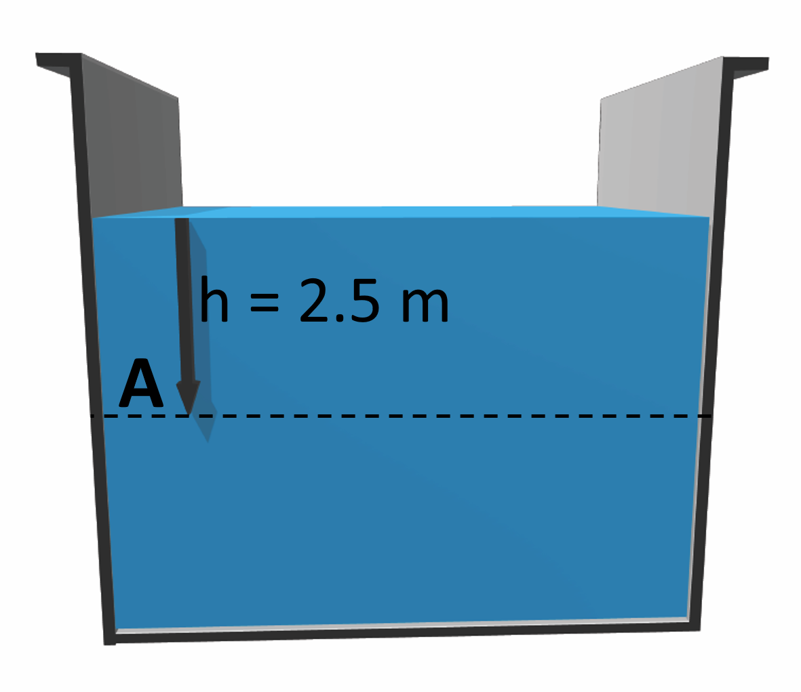
    </a>
    </div>
</div>

  <button id="e6" class="button"  onclick="show2('e6');">Solución</button>
  <div id="sol-e6" style="display:none;">
    <br>
    Solución:
    <br><br>

    <span class="math display">\[P_A=P_0 + dgh\]</span>

    Tomamos como punto de referencia 0 la superficie libre del fluido. Como está en contacto con la atmósfera <span class="math inline">\(P_0=101300Pa\)</span>. Por lo tanto:

    <span class="math display">\[P_A=101300Pa + 780Kg/m^3 * 9,8m/s^2 * 2,5m\]</span>

    <span class="math display">\[P_A=120410Pa\]</span>

  </div>
</article>

</section>

<section>

  <header>
      <h1 id="la-presión-atmosférica">La presión atmosférica</h1>
  </header>


<p>Como en el caso de cualquier otro gas, la atmósfera también ejerce fuerzas de presión. A esta presión se le conoce como presión atmosférica. El instrumento de medida es el “barómetro&quot;.</p>
<p>La presión atmosférica depende de muchos factores: la altura sobre el nivel del mar, la temperatura y las condiciones meteorológicas, de manera que incluso en un mismo punto geográfico, su valor es fluctuante. Como hemos visto en la ecuación anterior, sea cual sea esta presión, existe siempre en la superficie libre de un fluido que esté en contacto con ella.</p>
<p>En condiciones normales, la presión a nivel del mar es 1.013<span class="math inline">\(\times\)</span>10<span class="math inline">\(^5\)</span> Pa. Este valor se utiliza también como unidad de medida: “una atmósfera&quot; (1 atm) equivale 1.013<span class="math inline">\(\times\)</span>10<span class="math inline">\(^5\)</span> Pa. La atmósfera es una unidad de presión muy usual. Por ejemplo, si una bomba nos proporciona 3 atm, esto quiere decir: <span class="math display">\[P=3\mbox{ atm}=3\mbox{ atm}\times 1.013\times10^5\mbox{ Pa/atm}=3.039\times 10^5\mbox{ Pa}\]</span></p>
<p>¡OJO! Aunque tengan el mismo nombre, no hemos de confundir la “presión atmosférica&quot;, <strong>magnitud</strong> que como hemos dicho es la presión que en un punto determinado hay debido al contacto con la atmósfera, a la unidad “atmósfera“, la cual es una <strong>unidad</strong> que siempre vale lo mismo 1.013<span class="math inline">\(\times\)</span>10<span class="math inline">\(^5\)</span> Pa. Por ejemplo, si en un lugar el barómetro marca 0.9<span class="math inline">\(\times\)</span>10<span class="math inline">\(^5\)</span> Pa, entonces, la ”presión atmosférica&quot; será <span class="math display">\[\frac{0.9\times 10^5\mbox{Pa}}{1.013\times 10^5\mbox{Pa/atm}}=0.89\mbox{atm}\]</span></p>


<h2 id="medida-de-la-presión-el-barómetro">Medida de la presión: el barómetro</h2>
<p>El barómetro es el instrumento de medida de la presión atmosférica. El barómetro clásico consiste en un tubo de vidrio cerrado por un extremo y lleno de un líquido (generalmente mercurio) y con la abertura en contacto con un depósito con el mismo líquido. El depósito está abierto a la atmósfera, mientras que la parte superior del tubo está vacía. En el siguiente esquema observamos que sobre la base del tubo debe tener la presión atmosférica y a la vez la presión dada por la ecuación de la estática de fluidos, es decir: <span class="math display">\[P=P_{atm}=dgh\]</span> siendo <span class="math inline">\(d\)</span> la densidad del líquido (en el caso del mercurio, 13600 kg/m<span class="math inline">\(^3\)</span>) y <span class="math inline">\(h\)</span> la altura de la columna de mercurio. De esta manera, conociendo la altura en el tubo obtendremos la presión atmosférica.</p>

<article style="background-color:lightblue;border-color:blue">
  <strong>EJEMPLO: En condiciones normales de presión, <span class="math inline">\(P_{atm}= 1,013 * 10^5Pa\)</span>, cuál sería la altura de la columna?</strong>

  <button id="e7" class="button"  onclick="show2('e7');">Solución</button>
  <div id="sol-e7" style="display:none;">
    <br>
    Solución:
    <br><br>

    <span class="math display">\[h=\frac{P_{atm}}{dg}= 760mm\]</span>


  </div>
</article>


<p>La generalización del uso de estos barómetros dio lugar al uso de la altura en mm como una unidad de medida de presión. De este modo, si la presión es 760 mm de Hg o bien 760 <strong><em>torr</em></strong>, esto quiere decir que la presión es 1 atm y que la altura en el barómetro es de 760 mm.</p>

<div class="sbsimage">
    <div class="imgContainerEnd">
      <a data-fancybox="" href="figuras/teoria-barometro.png">
      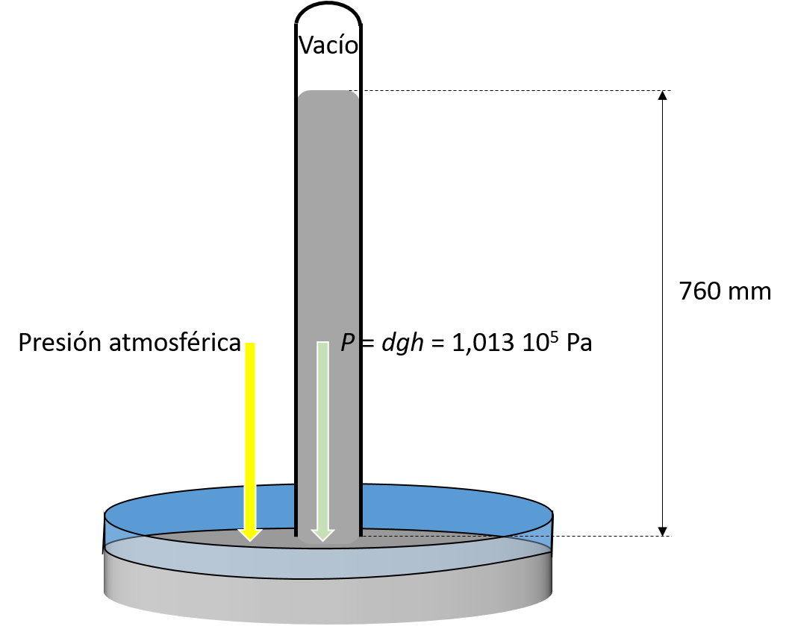
    </a>
    </div>
</div>

<p>Ya hemos visto varias unidades para la presión, Pa, atm y torr. Existen otras unidades. Por ejemplo, en meteorología se usan los mapas de isobaras que les ayudan a predecir la aparición de nubes y chubascos. En estos mapas se indica la presión atmosférica en diversos puntos geográficos. Las unidades que se suelen utilizar es el “milibar” (mb) que es la milésima parte de un “bar”: <span class="math display">\[1 \mbox{ bar}=10^5 \mbox{ Pa}\]</span> <span class="math display">\[1 \mbox{ mbar}=\frac{1}{1000} \mbox{ bar}= 100 \mbox{ Pa}\]</span> Por ejemplo, 1 atm=1.013 bar=1013 mbar. Finalmente, otra unidad usual es el torr o milímetro de mercurio (mm de Hg). Concretamente 1 atm = 760 torr.</p>
<p>En la siguiente tabla se muestra un resumen de las unidades usuales para medir presión y sus valores en Pa:</p>
<br>
<center><table>
<caption>Unidades usuales para medir la presión</caption>
<thead>
<tr class="header">
<th align="left">Unidad</th>
<th align="left">Equivalencia en Pa</th>
<th align="center">Equivalencia de 1 atm</th>
</tr>
</thead>
<tbody>
<tr class="odd">
<td align="left">1 Pa</td>
<td align="left">1 Pa</td>
<td align="center">1.013 10<span class="math inline">\(^5\)</span> Pa</td>
</tr>
<tr class="even">
<td align="left">1 dina/cm<span class="math inline">\(^2\)</span></td>
<td align="left">0.1 Pa</td>
<td align="center">1,013 10<span class="math inline">\(^6\)</span> dinas/cm<span class="math inline">\(^2\)</span></td>
</tr>
<tr class="odd">
<td align="left">1 atm</td>
<td align="left">1.013<span class="math inline">\(\times 10^5\)</span> Pa</td>
<td align="center">1 atm</td>
</tr>
<tr class="even">
<td align="left">1 torr</td>
<td align="left"><span class="math inline">\(\frac{1}{760}\)</span> Pa</td>
<td align="center">760 torr</td>
</tr>
<tr class="odd">
<td align="left">1 bar</td>
<td align="left">10<span class="math inline">\(^5\)</span> Pa</td>
<td align="center">1,013 bar</td>
</tr>
<tr class="even">
<td align="left">1 mbar</td>
<td align="left">100 Pa</td>
<td align="center">1013 mbar</td>
</tr>
</tbody>
</table></center
<p><br />
</p>

<br><br><br>

<a href="fluidos-3.html">Ejercicios de presión</a>

<br><br>

</section>

<section>

  <header>
      <h1 id="el-principio-de-arquímedes">El principio de Arquímedes</h1>
  </header>

<blockquote><p><strong>Todo cuerpo sumergido en un fluido sufre una fuerza vertical y hacia arriba igual al peso del fluido que desaloja la parte sumergida del cuerpo.</strong></p></blockquote>
<p>A esta fuerza se le conoce como “Empuje de Arquímedes&quot;. Se puede entender su procedencia intuitivamente con el siguiente esquema:</p>


<div class="sbsimage">
    <div class="imgContainerEnd">
      <a data-fancybox="" href="figuras/teoria-Arquimedes.png">
      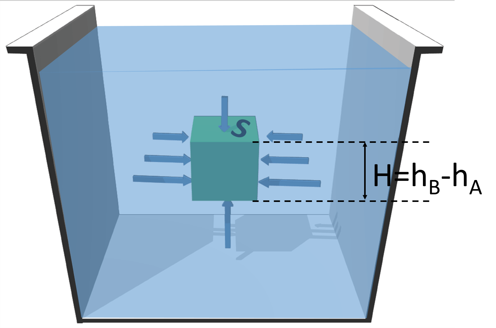
    </a>
    </div>
</div>

<p>Calculemos la componente vertical de las fuerzas de presión sobre el objeto. En las caras laterales, como la fuerza de presión es perpendicular a ellas, es horizontal y no contribuye. Sólo contribuyen las fuerzas de presión sobre las caras superior e inferior. Ambas fuerzas son opuestas en sentido, pero diferentes en magnitud. En efecto, dado que la cara inferior está a mayor profundidad, la presión en ella es mayor y por lo tanto aparece una fuerza neta, es decir, el empuje, que será: <span class="math display">\[E=F_{neta}=P_BS-P_AS=(P_B-P_A)S\]</span> donde S es el área de dichas caras. La cara inferior (cara B) está a una profundidad <span class="math inline">\(h_B\)</span> y la cara superior (cara A) está a una profundidad <span class="math inline">\(h_A\)</span>. Por lo tanto, la diferencia de presiones será: <span class="math display">\[P_B-P_A=dg(h_B-h_A)=dgH\]</span> siendo <span class="math inline">\(H\)</span> la altura del objeto. Y el empuje es: <span class="math display">\[E=(P_B-P_A)S=dg(h_B-h_A)S=dgHS\]</span> Dado que el volumen del cuerpo es <span class="math inline">\(HS\)</span>, y la densidad del fluido es <span class="math inline">\(d\)</span>, entonces <span class="math inline">\(m=dHS\)</span> es la masa de fluido con el mismo volumen que el cuerpo, y por tanto: <span class="math display">\[E=mg\]</span> es decir, el cuerpo experimenta una fuerza hacia arriba igual al peso del fluido desalojado.</p>


<article style="background-color:lightblue;border-color:blue">
  <strong>EJEMPLO: Si peso un cuerpo sumergido en un fluido,
cuánto marcará la balanza? Tomemos como ejemplo un lingote
de oro de do=19.3 g/cm3 de densidad, de volumen 640
cm3, sumergido en un alcohol etílico (d=780 kg/m3).</strong>


  <button id="e8" class="button"  onclick="show2('e8');">Solución</button>
  <div id="sol-e8" style="display:none;">
    <br>
    Solución:
    <br><br>

    La masa del lingote será:

    <span class="math display">\[m_{real}= d_0V=193000kg/m^3 * 640 * 10^{-6}m^3\]</span>
    <span class="math display">\[m_{real}= 12,35kg\]</span>

    El peso del lingote será:

    <span class="math display">\[P= d_0gV=193000kg/m^3 * 9,8m/s^2 * 640 * 10^{-6}m^3\]</span>
    <span class="math display">\[P = 121N\]</span>

    Por otro lado, el fluido ejerce un empuje hacia arriba:

    <span class="math display">\[E=dgV=780kg/m^3 * 9,8 m/s^2 * 640 * 10^{-6}m^3\]</span>
    <span class="math display">\[E=4,9N\]</span>

    Dado que el peso se dirige hacia abajo y el empuje hacia arriba, sobre la balanza la fuerza neta será la diferencia. A esto lo llamamos "peso aparente":

    <span class="math display">\[P_{ap}= P - E = d_0gV - dgV = (d_0 - d) gV\]</span>
    <span class="math display">\[P_{ap}= (19300 - 780) kg/m^3 * 9,8m/s^2 * 640 * 10^{-6}\]</span>
    <span class="math display">\[P_{ap} = 116,1N\]</span>

    Como la balanza muestra la masa, marcará:

    <span class="math display">\[m_{ap}=\frac{P_{ap}}{g} = \frac{116,1N}{9,8m/s^2}\]</span>
    <span class="math display">\[m_{ap}=11,9kg\]</span>

    es decir, 0.5 kg menos de su valor real.


  </div>
</article>


<p>OJO: No olvide que el empuje es consecuencia de la presión del fluido. Es el fluido el que ejerce esta fuerza. Para calcular el empuje, use la densidad del fluido.</p>

</section>

<section>

  <header>
      <h1 id="principio-de-pascal">Principio de Pascal</h1>
  </header>

<blockquote><p><strong>Cualquier cambio de presión que se realice a un líquido encerrado dentro de un recipiente se transmite por igual a todos los puntos del fluido y a las propias paredes del recipiente.</strong></p></blockquote>

<h2 id="aplicaciones">Aplicaciones</h2>
<ul>
<li><p><strong>El elevador hidráulico</strong></p></li>
</ul>
<p>Los elevadores hidráulicos se utilizan en multitud de aplicaciones. Son dispositivos utilizados para elevar grandes pesos con poca fuerza. Esquemáticamente consta de dos cilindros de diámetros bien diferentes y comunicados entre sí como en la figura. En la parte superior de cada cilindro hay un émbolo. Sobre el émbolo pequeño se ejerce una fuerza. Como resultado de este principio, en el segundo émbolo aparece una fuerza mucho mayor. Para entenderlo, acudamos al principio de Pascal: cuando se empuja el émbolo pequeño, la presión en el líquido aumentará una cantidad <span class="math inline">\(\Delta P_1\)</span> dado por <span class="math display">\[\Delta P_1=\frac{F_1}{S_1}\]</span> siendo <span class="math inline">\(S_1\)</span> la sección del cilindro 1. Por el principio de Pascal, este aumento de presión en el émbolo grande aumentará la presión en la misma cantidad: <span class="math display">\[\Delta P_2=\Delta P_1=\frac{F_1}{S_1}\]</span> Es decir, el líquido en el segundo cilindro ejerce sobre el pistón una fuerza debido a la presión ejercida sobre el émbolo pequeño. Pero como el área del líquido es mayor, la fuerza será también mayor: <span class="math display">\[F_2=\Delta P_2S_2=F_1\frac{S_2}{S_1}&gt;F_1\]</span></p>

<div class="sbsimage">
    <div class="imgContainerEnd">
      <a data-fancybox="" href="figuras/teoria-elevador.png">
      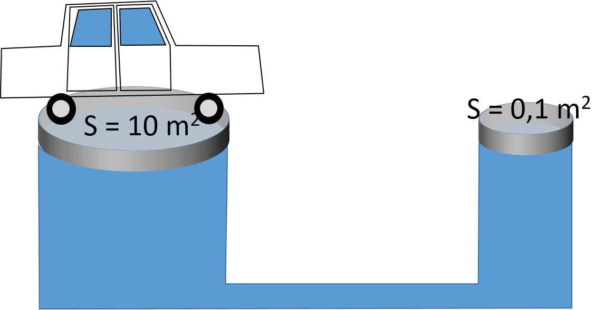
    </a>
    </div>
</div>


<p>En resumen: <span> <span class="math display">\[\fbox{$\displaystyle \frac{F_1}{S_1}=\frac{F_2}{S_2}$}\]</span></span></p>
<p>En un elevador, en el pistón grande 2 se sitúa el objeto que se pretende levantar un peso <span class="math inline">\(P\)</span>. La fuerza <span class="math inline">\(F_1\)</span> sobre el pistón 1 debe compensar el peso de este objeto para poder levantarlo. Es decir: <span class="math display">\[F_1=F_2\frac{S_1}{S_2}=P\frac{S_1}{S_2}\]</span></p>


<article style="background-color:lightblue;border-color:blue">
  <strong>EJEMPLO: ¿Es factible levantar un elefante con el peso de una persona?.</strong>


  <button id="e9" class="button"  onclick="show2('e9');">Solución</button>
  <div id="sol-e9" style="display:none;">
    <br>
    Solución:
    <br><br>


<p>Planteamiento: Vamos a utilizar un elevador hidráulico, obviamente. Esto significa que se debe cumplir la relación <span class="math inline">\(\frac{F_1}{S_1}=\frac{F_2}{S_2}\)</span>. Lo primero que tenemos que hacer es un esquema:</p>

<div class="sbsimage">
    <div class="imgContainerEnd">
      <a data-fancybox="" href="figuras/teoria-elevador-elefante.png">
      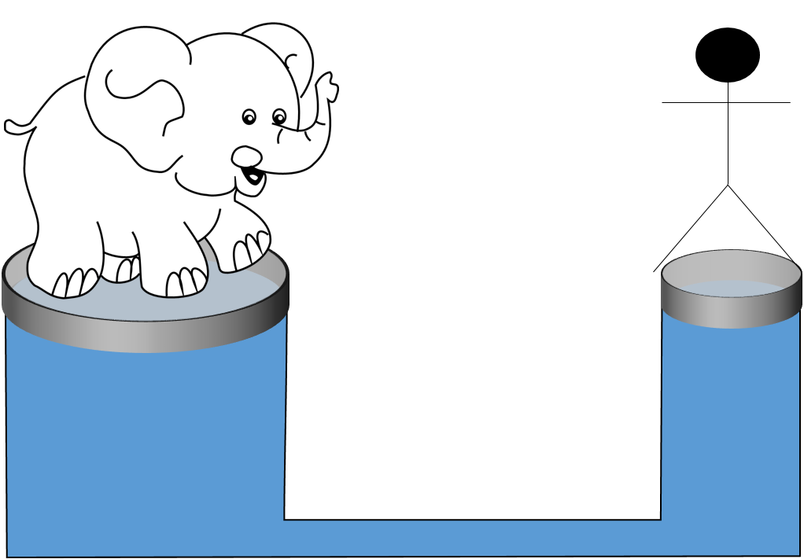
    </a>
    </div>
</div>


<p>En el pistón grande pondremos al elefante de masa <span class="math inline">\(m_2\)</span>, por lo que <span class="math display">\[F_2=m_2g\]</span> El área del pistón no lo sabemos. Supongamos que es cilíndrico. Su área será <span class="math display">\[S_2=\pi \Bigl(\frac{D_2}{2}\Bigr)^2\]</span> En el pistón pequeño, el 1, pondremos a la persona, por lo que <span class="math inline">\(F_1=P_1=m_1g\)</span>, siendo <span class="math inline">\(m_1\)</span> la masa de la persona.</p>
<p>Además, interesa que <span class="math inline">\(S_2/S_1\)</span> sea lo más grande posible, para que un hombre sea capaz de aguantar el peso del elefante con su propio peso. El mínimo valor de <span class="math inline">\(S_1\)</span> estará limitado por la superficie de suelo que abarca un hombre de pie: <span class="math display">\[S_1=\pi R_1^2=\pi \Bigl(\frac{D_1}{2}\Bigr)^2\]</span></p>
<p>En resumen: <span class="math display">\[\frac{F_1}{S_1}=\frac{m_1g}{\pi \Bigl(\frac{D_1}{2}\Bigr)^2}\]</span> <span class="math display">\[\frac{F_2}{S_2}=\frac{m_2g}{\pi \Bigl(\frac{D_2}{2}\Bigr)^2}\]</span> <span class="math display">\[\frac{m_1g}{\pi \Bigl(\frac{D_1}{2}\Bigr)^2}=\frac{m_2g}{\pi \Bigl(\frac{D_2}{2}\Bigr)^2}\]</span> <span class="math display">\[\frac{m_1}{D_1^2}=\frac{m_2}{D_2^2}\]</span></p>
<p>Ahora veamos de qué datos disponemos. La distancia entre los pies es aproximadamente 0.5 m; el pistón pequeño no puede medir menos de eso. Además, conocemos la masa de un hombre (aproximadamente 80 kg) y de un elefante (aprox. 5000 kg), por lo que en la anterior ecuación me queda una única incógnita: el diámetro del pistón grande. Si lo despejamos de la ecuación: <span class="math display">\[D_2=D_1\sqrt{\frac{m_2}{m_1}}\]</span> Y por último sustituimos los datos: <span class="math display">\[D_2=0.5\mbox{m}\sqrt{\frac{5000\mbox{kg}}{80\mbox{kg}}}=4\mbox{m}\]</span></p>
<p>Por lo tanto, la solución es que sí, siempre y cuando se utilice un sistema que cumpla con la ecuación <span class="math inline">\(\frac{m_1}{D_1^2}=\frac{m_2}{D_2^2}\)</span>. Particularmente, para valores razonables de cada variable, este sistema debería tener un pistón grande de no menos de 4 m.</p>


<br><br><strong>¿Y si utilizamos una hormiga en vez de una persona?</strong>

<button id="e10" class="button"  onclick="show2('e10');">Solución</button>
<div id="sol-e10" style="display:none;">
  <br>
  Solución:
  <br><br>

 En este caso, el pistón 1 puede ser más pequeño, pero no menos de 2 cm, que es la longitud de una hormiga. Como su masa es 3 g, tendremos: <span class="math display">\[D_2=0.02\mbox{m}\sqrt{\frac{5000\mbox{kg}}{0.003\mbox{kg}}}=\mbox{¡}26\mbox{m}!\]</span></p>
<p>Es decir, un pistón mucho más grande.</p>
<p><br />
</p>

</div>
</div>
</article>
</section>

  <br><br>

  <a href="fluidos-4.html">Ejercicios de Principio de Arquímedes y principio de Pascal</a>

  <br><br>
<script type="text/javascript" language="javascript">
  function show(str, obj){
    document.getElementById(obj).innerHTML = str;
    //MathJax.Hub.Typeset();
    MathJax.Hub.Queue(["Typeset",MathJax.Hub,obj]);
  }
  function show2(divID) {
      var sol = document.getElementById("sol-"+divID);
      var div = document.getElementById(divID);
      if(sol.style.display == "none"){
        sol.style.display = "block";
      }else{
        sol.style.display = "none";
      }
      if(div.innerHTML == "Solución"){
        div.innerHTML = "Oculta solución";
      }else{
        div.innerHTML = "Solución";
      }
  }
</script>

</body>
</html>
